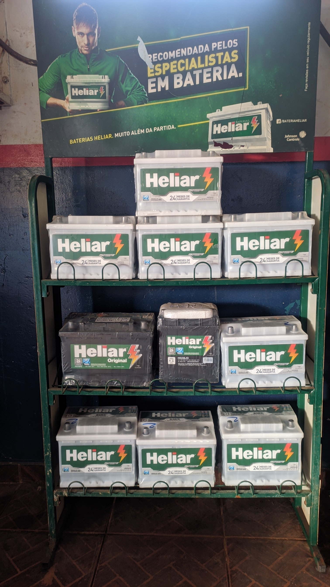
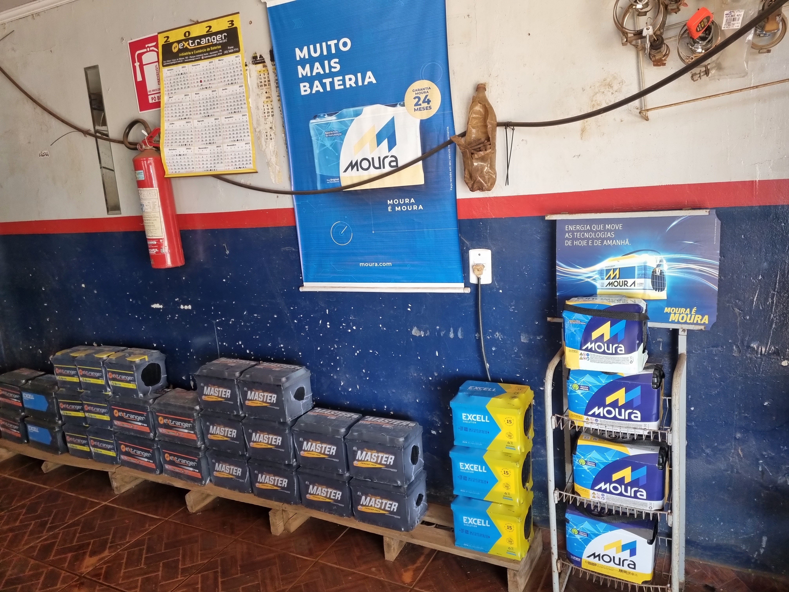
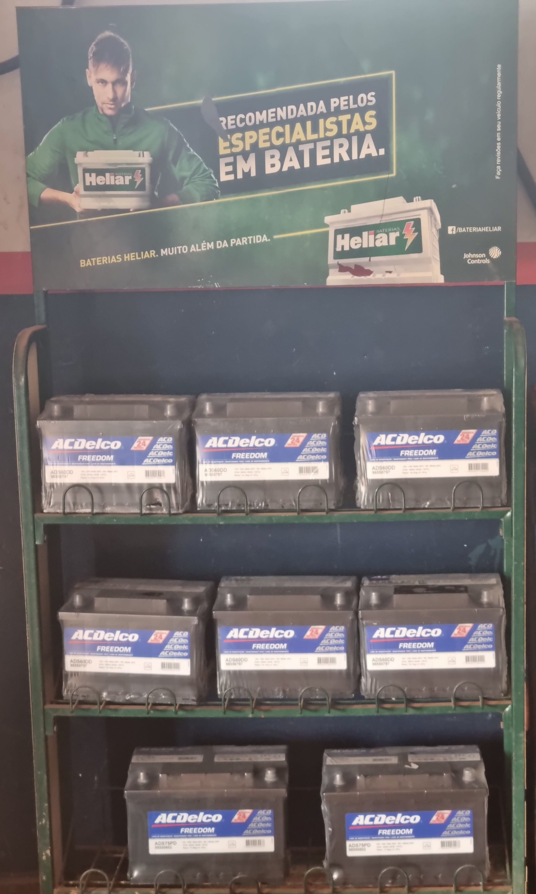

Pollo Radiadores E Baterias
Há mais de 25 anos em Silvânia, a loja Pollo Radiadores e Baterias está sempre pronta para servir a população com honestidade e bom serviço. Veja os serviços que oferecemos!
- Limpeza do sistema
- Troca das caixas do radiador
- Troca da colmeia e soldas em geral
- Varetação e limpeza do radiador
- Baterias de várias marcas e modelos com o menor preço da cidade!
Limpeza do sistema

Nesse serviço é feita a limpeza de todo o bloco do sistema, incluindo mangueiras e radiador, com o auxílio de um aditivo de limpeza. Após, é feita a limpeza do reservatório e a drenagem da água, para então colocar o aditivo concentrado que evitará o retorno da ferrugem.
Troca das caixas do radiador

Fazemos a troca das caixas do radiador e borrachas de vedação de diversos modelos de carros, juntamente com uma limpeza geral do radiador.
Troca da colmeia
.jpg)
Fazemos a troca de diversos modelos de radiadores, nacionais e importados.fazemos também solda de estanho,foscoper,amarela e aluminio. Faça sua cotação pelo telefone.
Varetação e limpeza do radiador

Realizamos também a varetação e limpeza completa do radiador.
Baterias de várias marcas e modelos!
Temos baterias a partir de R$170,00, de 40 a 220 amperes. Ligue já no telefone (62) 99651-5765 e faça seu orçamento.
  